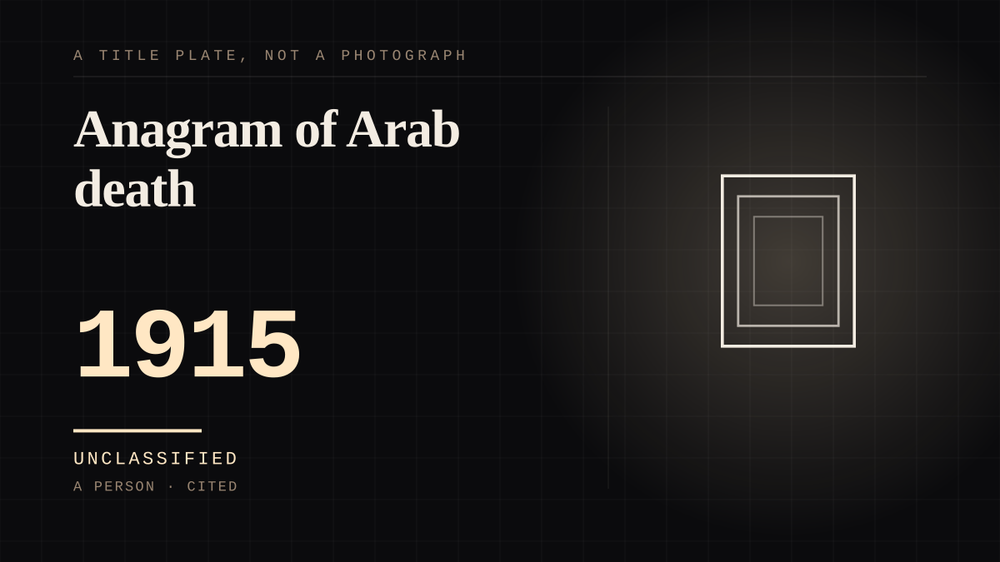

A person · 1915 ·
Anagram of Arab death
A studio invented an Egyptian past for its newest star, told the press the invention was a hoax, and the audience kept the invention anyway - the Vamp, whose films are now mostly ash.

The studio wrote her a past, and the past is what the audience bought. Theda Bara was born Theodosia Burr Goodman in 1885; the Vamp was assembled at a press conference. When A Fool There Was opened in January 1915 - produced by William Fox, directed by Frank Powell, with Bara billed simply as 'The Vampire' - Fox gave the press an elaborate fictional biography making her an exotic Arabian actress, presented her in a flamboyant fur outfit, and then deliberately leaked that the whole thing was a hoax, which the film's record says may have been one of Hollywood's first publicity stunts. The invented origin ran further than the stunt: the star was said to be Egyptian-born, interested in the occult, the daughter of an Arab sheik and a French woman, born in the Sahara, and the name, per the studio's own account, was 'an anagram of Arab death'. The distance was not a side effect of the star system; it was the product. The film 'popularised the word vamp (short for vampire)', a femme fatale who fascinates and ruins the men she meets, and by her own quoted line - 'I will continue doing vampires as long as people sin.' - the arrangement had her consent. She was Fox's biggest star from 1915 to 1919, paid $4,000 a week at her peak, and made 43 films between 1914 and 1926 before marrying Charles Brabin in 1921 and retiring in 1926. And almost nothing of what the audiences loved is left to check. Complete prints of six of the 43 films survive; the 1937 Fox vault fire took most of the rest. So the object here is manufactured twice over - a real woman under a written biography, sold with a wink, and then mostly lost to fire. The record holds about six honest documents of what the crowds were actually watching, one of them A Fool There Was, entered into the National Film Registry in 2015. The rest of the relationship runs on press materials.
Where it sits
1900 1900-1949 · 1915 1949
Provenance · 2 source record(s)
- retrievableBorn Theodosia Burr Goodman, 29 July 1885 - 7 April 1955; Fox 'concocted a fictitious persona for her as an Egyptian-born woman interested in the occult'; the name recorded as 'an anagram of Arab death'; the promoted origins (an Arab sheik's and a French woman's daughter, born in the Sahara); 'I will continue doing vampires as long as people sin'; Fox's biggest star 1915-1919 at $4,000 a week; 43 films 1914-1926; complete prints of only six survive; married Charles Brabin 1921, retired 1926.Wikipedia. 'Theda Bara.' ↗
- retrievable1915 silent drama produced by William Fox, directed by Frank Powell, starring Theda Bara as 'The Vampire'; controversial intertitles including 'Kiss me, my fool!'; 'popularised the word vamp (short for vampire)'; based on the 1909 Broadway play from Rudyard Kipling's poem 'The Vampire'; the January 1915 press conference, the fur outfit and the intentional leak that the biography was a hoax - 'may have been one of Hollywood's first publicity stunts'; one of the few extant Bara films; selected for the National Film Registry in 2015.Wikipedia. 'A Fool There Was (1915 film).' ↗
Connected · 3 out, 0 in
It sits in